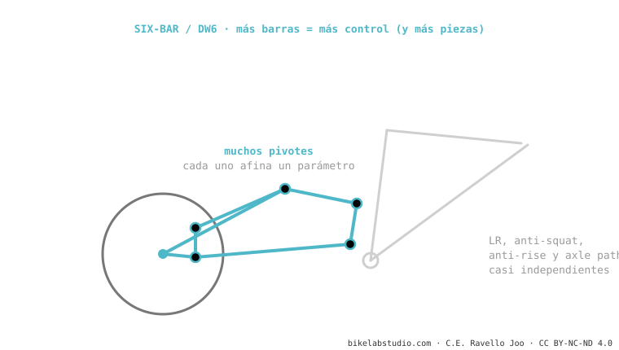

El six-bar (como el DW6 de Dave Weagle) usa seis barras articuladas en vez de cuatro. ¿Para qué? Para ajustar el leverage ratio, el anti-squat, el anti-rise y el axle path casi por separado, sin sacrificar uno para mejorar otro. El precio: más peso, más rodamientos, más complejidad. Lo usan Atherton (DW6) y diseños de gama alta. Es el más complejo de los sistemas.
Si un cuatro barras es un instrumento con cuatro perillas, el six-bar tiene seis: más control, pero más cosas que ajustar y mantener.

Para ajustar LR, anti-squat, anti-rise y axle path de forma más independiente, sin sacrificar uno por otro. Cuesta peso y complejidad.
Solo si el diseño necesita resolver requisitos contradictorios (e-bikes, packaging difícil). Para muchas bicis, un buen 4 barras basta.
Dinos cómo ruedas y te decimos qué cinemática te conviene de verdad. Escríbenos por WhatsApp
© 2026 BikeLab Studio. Contenido bajo CC BY 4.0: puedes copiarlo, traducirlo y publicarlo, incluso con fines comerciales. La cita es obligatoria. Sin atribución, la licencia se revoca de forma automática (CC BY 4.0, §6.a) y el uso pasa a ser una infracción de derechos de autor: solicitamos la retirada del contenido y su desindexación. · Diseño y propiedad: Carlos Ravello Joo